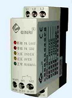
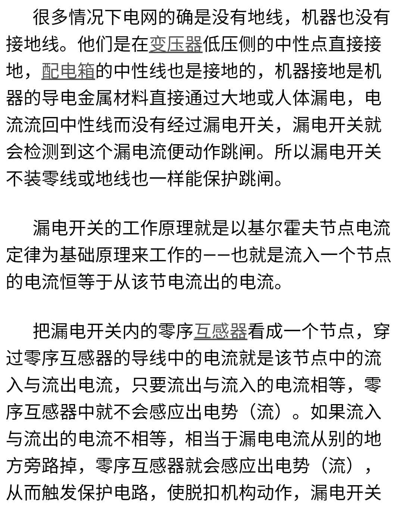

浪涌（surge），又称为电涌、突波，是指瞬间超出稳定值的峰值，包括浪涌电压和浪涌电流
供电系统的浪涌主要来自两方面的原因：外部（雷电原因）和内部（电气设备启停和故障等）。浪涌的特点往往是时间很短（雷电造成的过电压往往在微秒级，电气设备造成的过电压往往在毫秒级），但是瞬时的电压和电流极大，极有可能对用电设备和电缆造成危害，所以需要浪涌保护器对它们进行保护。
浪涌保护器，英文名Surge Protective
Device，简称SPD，是一种为各种电子设备、仪器仪表、通讯线路提供安全防护的电子装置，主要用于限制过电压和泄放电涌电流。浪涌保护器一般是与被保护的设备并联，当产生过电压时，可以起到分流和限压的效果。防止过大的电流与电压对设备产生损害。
浪涌保护器的核心元件是内部的一个非线性元件。根据非线性元件的不同，浪涌保护器可以分为开关型（核心元件主要为放电间隙）和限压型（核心元件主要为压敏电阻）。
放电间隙和压敏电阻的工作原理虽然有差异，但是基本的特性非常相似：在没有过电压时，他们的阻抗都非常高，一般是兆欧级，几乎相当于断路。当出现过电压时，阻抗迅速下降到几欧，浪涌电流就会通过浪涌保护器流入地，而不会进入设备，同时，由于浪涌保护器的这时的阻抗很小，它的两遍电压也比较小，同时因为他和被保护的设备并联，也就防止设备承受较大的浪涌电压。这样，就起到了泄流和限压的效果。

漏电开关的正确称呼为剩余电流保护装置(以下简称RCD)，是一种具有特殊保护功能（漏电保护）的空气断路器。它所检测的是剩余电流，即被保护回路内相线和中性线电流瞬时值的代数和(其中包括中性线中的三相不平衡电流和谐波电流)。为此，RCD的整定值，也即其额动作电流IΔn，只需躲开正常泄漏电流值即可，此值以mA计，所以RCD能十分灵敏地切断保护回路的接地故障，还可用作防直接接触电击的后备保护。
漏电开关不能代替空气开关。虽然漏电开关比空气开关多了一项保护功能，但在运行过程中因漏电的可能性经常存在而会出现经常跳闸的现象，导致负载会经常出现停电，影响电气设备的持续、正常的运行。所以，一般只在施工现场临时用电或工业与民用建筑的插座回路中采用。
漏电开关也可以说是空气开关的一种，机械动作、灭弧方式都类似。但由于漏电开关保护的主要是人身，一般动作值都是毫安级。
支路多的总电源处不装漏保，因为支路多不容易与总漏保匹配易引起误动或拒动。在支路上装漏克服其上缺点。各去路装支路断路器
插座由于经常改变用途要装带漏电保护的断路器

并联电阻使线圈在突然断电时仍有电流通路，这样就降低了电流变化率，使自感电动势下降。电阻越小，自感电动势越低。但这种做法有个缺点，就是在接触器通电过程中，电阻一直在浪费电能。设计时在保证线路中的电子元件不被击穿的前提下，应尽量提高电阻的阻值。随着半导体器件的发展，这种做法基本被完全淘汰了。
压敏电阻的特性是在它两端的电压低于某一数值时，它几乎不导电，相当于开路；而当其上电压超过某一数值以后，它被击穿，几乎相当于短路。只要选择压敏电阻的安全工作电流大于线圈的电流，压敏电阻在断电以后又可以恢复开路状态。选择压敏电阻的击穿电压大于线圈的通电电压，就可以避免压敏电阻在线圈正常通电时有电流。因此，在线圈两端并联压敏电阻，既限制了线圈两端的电压，又避免了做法1的缺点，是比较理想的做法。而且，因为压敏电阻的双向特性基本对称，也可以用于交流接触器和其他交流电路中做限压元件使用。
根据电磁感应定律，感应电流产生的磁场，永远阻碍原磁场的变化。即，线圈断电时，感应电流和电压与原电流和电压同向。因此，在接触器直流线圈上反向并联一个二极管，就可以巧妙地利用二极管的单向导电特性，使二极管在线圈突然断电时得到正向电压而导通，起到接续线圈中的电流的作用，所以称“续流二极管”；在线圈通电过程中它始终处于反向截止状态，不消耗电能，也是一种比较理想的做法。
一、电容两端的电压不能特变，并上电容后就能延缓和降低线圈的反向电动势，减小干扰，延长接点的寿命。
二、在电容上串联一个适当的电阻，可以阻尼振荡，减小过电压的时间，达到更好的效果，这就是阻容吸收器。
此做法主要用于交流电路中，在压敏电阻没有得到广泛使用前，它曾经是交流电路的主要阻尼手段。
那为什么交流接触器不用采取上述措施？是因为电路里几乎没有与交流接触器线圈连接的电子元件，只有控制其通断的接触器辅助触点。而这些触点没有被击穿的担忧，所以就不用了。
但在暗处，你会发现空气被电离导电而冒火。只要线圈耐压大于空气的击穿电压，就完全可以不用限压措施了。但并不是所有的交流接触器线圈电路里都不用采取限压措施的。
如果用双向可控硅或其它电子元件来控制线圈的通断电，就需要考虑其耐压了。这时通常是在可控硅两端并联合适的阻容网络和压敏电阻来保护可控硅的。避免了专门制造特殊接触器的麻烦。
有的人以为交流接触器线圈断电时没有感应电压，所以不用采取保护措施。这是不对的。交流接触器线圈的感应电压是变化的。如果接触器刚好在线圈电流过零时断开，其感应电压是零，不用保护。但一般的接触器是人工或机械随机断电的，不可能总在电流过零时断开。
只要接触器线圈在断电时还有电流，就有感应电压。在接触器电流达到最大值时断开，感应电压也达到最大值。